class: middle, center # Direct Mapping of Some Problems to Ising Models with Three-Valued Coupling Coefficients <!-- abstract Last month, I was asked to suggest possible applications of coherent Ising machines (CIMs) with 10 000 spins and 10 000 x 10 000 three-valued (-1, 0, and 1) coupling coefficients. The difficulty comes from the fact that most hard problems worth solving cannot be directly represented by using the three-valued coupling coefficients, and indirect mapping (via max-cut, for example) may be inefficient in general. In this talk, I explain a few problems for which direct mapping to Ising models with three-valued coupling coefficients is possible (Lucas, 2014). --> Makito Oku (Research associate) 2015/12/08 Lab seminar .small[(last updated: 2015/12/21)] --- # Agenda * Introduction * Graph coloring problem * Graph isomorphism problem * Maximum clique problem * Conclusions --- # Agenda * **Introduction** * Graph coloring problem * Graph isomorphism problem * Maximum clique problem * Conclusions --- # P and NP * Decision problem: Yes-or-no question * **P**: Polynomial-time * **NP**: Non-deterministic polynomial-time * *Yes*-instances can be verified in polynomial time. * **NP-hard**: Any NP problem can be reduced to this in polynomial-time. * **NP-complete**: Intersection of NP-hard and NP 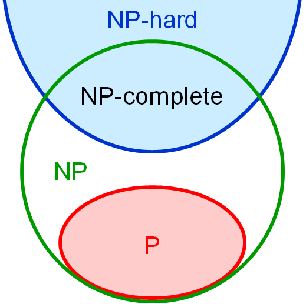 --- # NP-hard and NP-complete 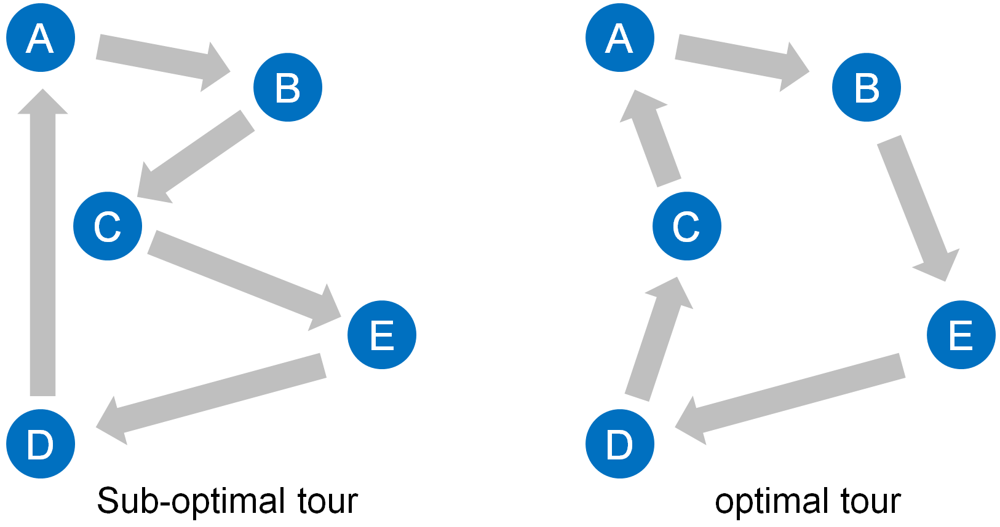 <br> * Question A: "What is the minimum cost tour?" * **NP-hard** optimization problem * Question B: "Can we make a tour with cost less than 100?" * **NP-complete** decision problem --- # Exponential time? * Exponential time: `$\mathrm{O}(2^{\mathrm{poly}(n)})\qquad$` ex. `$2^n$` * Sub-exponential time: `$\mathrm{O}(2^{\mathrm{o}(n)})\quad$` ex. `$2^\sqrt{n}$` * Any NP problem can be solved *at most* exponential time. * NP `$\subseteq$` PSPACE `$\subseteq$` EXPTIME * 3-SAT problem is believed to require **exponential time**. * Exponential time hypothesis (ETH) ([Impagliazzo & Paturi, 1999](http://dx.doi.org/10.1109/CCC.1999.766282)) * For some other NP-complete problems, **sub-exponential time** algorithms are known. * ex.) Hamiltonian cycle problem on planar graphs ([Deineko, et al., 2006](http://dx.doi.org/10.1016/j.orl.2005.04.013)) <!-- .small[This does not violate ETH because a 3-SAT problem with *k* variables is mapped to a planar graph of size *$n = \mathrm{O}(k^2)$*.] --> --- # Ising model 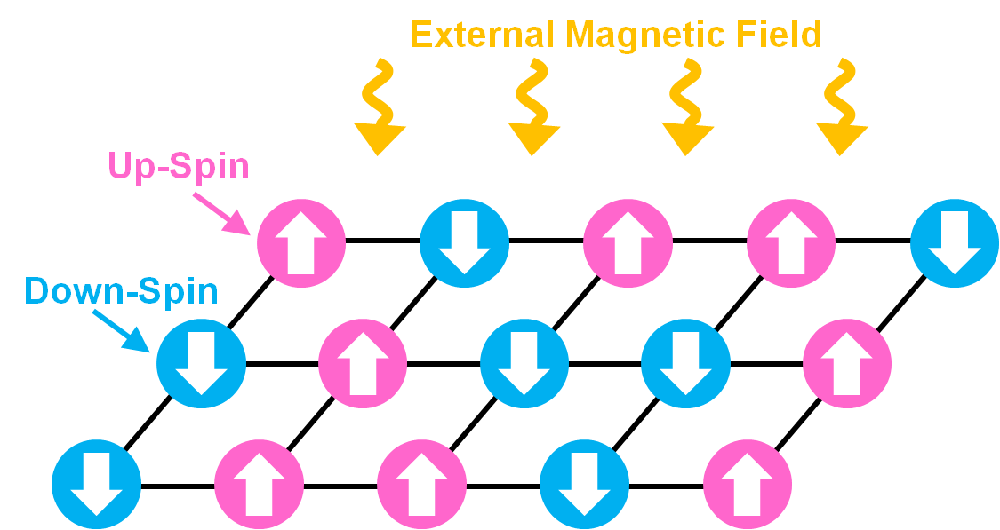 * Spins: `$s_i\in\{1,-1\}$` * Hamiltonian `$\displaystyle H = -\sum_{i,j} J_{ij} s_i s_j - \sum_i h_i s_i.$` * Finding a ground state (minimum energy state) of an Ising model is **NP-hard** ([Barahona, 1982](http://iopscience.iop.org/article/10.1088/0305-4470/15/10/028)). --- # Alternative representation * Spins: `$x_i\in\{0,1\}$` * QUBO (Quadratic unconstrained binary optimization) `$\displaystyle H = \sum_{i,j}Q_{ij} x_i x_j.$` * Since `$x_i=x_i^2$`, we can include the effect of the external field into the weights of self-loops `$Q_{ii}$`. * The two representations, based on {-1,1}-spins and {0,1}-spins, can be **mutually transformed into each other** by the relation `$s_i = 2 x_i- 1$`. .small[* Precisely, we need to add or subtract some constant, but this does not change the optimal configuration.] --- # Conversion * QUBO to Ising model `$\begin{align}J_{ij}&\leftarrow -Q_{ij},\\h_i&\leftarrow -\sum_k(Q_{ik}+Q_{ki}).\end{align}$` * Ising model to QUBO `$\displaystyle Q_{ij}\leftarrow -J_{ij}+\frac{\delta_{ij}}{2}\left(\sum_k(J_{ik}+J_{ki})-h_i\right).$` --- # Ising model solvers Recently, several special hardwares or physical systems for solving Ising models have been proposed. 1. D-Wave machines * D-Wave One (2011, 128 qubits) * D-Wave Two (2013, 512 qubits) * D-Wave 2X (2015, 1 152 qubits) * Based on quantum annealing ([Boixo, et al., 2014](http://dx.doi.org/10.1038/nphys2900)) 2. Ising chip by Hitachi, Ltd. ([Yamaoka, et al., 2015](http://dx.doi.org/10.1109/ISSCC.2015.7063111); [Yoshimura, et al., 2015](http://dx.doi.org/10.1038/srep16213)) * 20 480 spins 3. **Coherent Ising Machine** --- # Coherent Ising Machine * **Laser network** ([Utsunomiya, et al., 2011](http://dx.doi.org/10.1364/OE.19.018091); [Takata, et al., 2012](http://dx.doi.org/10.1088/1367-2630/14/1/013052); [Takata and Yamamoto, 2014](http://dx.doi.org/10.1103/PhysRevA.89.032319); [Utsunomiya, et al., 2015](http://dx.doi.org/10.1364/OE.23.006029)) * *N* slave lasers * Right or left circular polarizations * Extension to XY model is easy. * **DOPO (degenerate optical parametric oscillator) network** ([Z. Wang, et al., 2013](http://dx.doi.org/10.1103/PhysRevA.88.063853); [Marandi, et al., 2014](http://dx.doi.org/10.1038/nphoton.2014.249); [Haribara, et al., 2015](http://arxiv.org/abs/1501.07030)) * *N* pulses in a ring cavity * 0 or `$\pi$` phases * Better scalability <!-- # Laser network * Schematic illustration ([Quantum Information Processing Newsletter, No.15, 2014](http://www.nii.ac.jp/qis/first-quantum/e/newsLetter/pdf/newsletter_no15.pdf)) 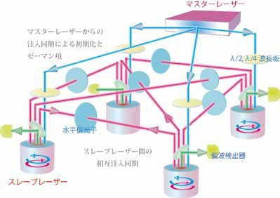 # Laser network * 2-spin implementation ([Utsunomiya, et al., 2015](http://dx.doi.org/10.1364/OE.23.006029)) 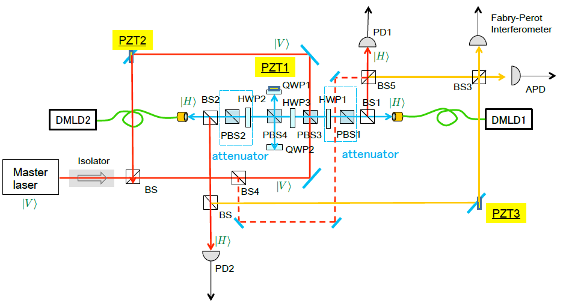 .small[DMLD: discrete mode laser diode (slave laser), PZT: piezoelectric transducer (optical length controller), BS/PBS: (polarization) beam splitter, HWP/QWP: half/quarter wave plate, PD/APD: (avalanche) photo diode] # DOPO network * 4-spin implementation ([Marandi, et al., 2014](http://dx.doi.org/10.1038/nphoton.2014.249)) 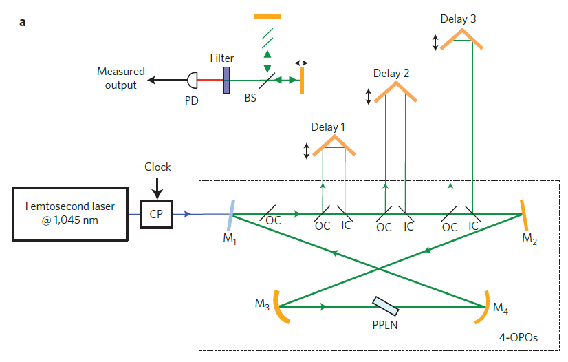 # DOPO network * Schematic illustration ([Haribara, et al., 2015](http://arxiv.org/abs/1501.07030)) * 2 000-spin system has been implemented. 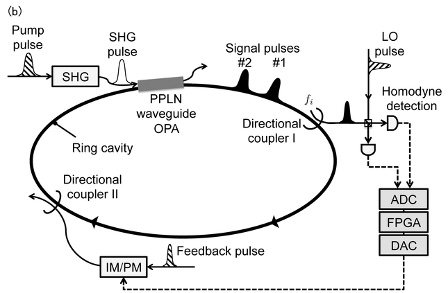 --> --- # Constraints on coupling coefficients * On November 13th, Prof. Aihara asked some of us to suggest possible applications of CIMs with each of the following four conditions: .table-bordered[ | | Number of connections | Weight type | |:-:|:---------------------------:|:---------------------:| | 1 | 2 000 x 2 000 | **{-1, 0, 1}-valued** | | 2 | 10 000 x 10 000 | **{-1, 0, 1}-valued** | | 3 | 160 x 160 | real-valued | | 4 | 1 600 x 1 600 | real-valued | ] <!-- 1. 2 000 x 2 000 connections, **{-1, 0, 1}-valued** 2. 10 000 x 10 000 connections, **{-1, 0, 1}-valued** 3. 160 x 160 connections, real-valued 4. 1 600 x 1 600 connections, real-valued --> * Problem is that most problems worth solving cannot be directly represented by using the thee-valued weights. --- # Literature search * D-Wave machines * Lattice model for protein folding ([Perdomo-Ortiz, et al., 2012](http://dx.doi.org/10.1038/srep00571)) * Hamiltonian path problem and graph coloring problem ([Rieffel, et al., 2015](http://dx.doi.org/10.1007/s11128-014-0892-x)) * Graph isomorphism problem ([Zick, et al., 2015](http://dx.doi.org/10.1038/srep11168)) * Ising chips * Max-cut problem ([Yamaoka, et al., 2015](http://dx.doi.org/10.1109/ISSCC.2015.7063111)) * Coherent Ising machines * Max-cut problem ([Z. Wang, et al., 2013](http://dx.doi.org/10.1103/PhysRevA.88.063853); [Haribara, et al., 2015](http://arxiv.org/abs/1501.07030)) --- # Purpose * Fortunately, I found a nice review that describes how to map many famous NP or NP-hard problems to Ising models ([Lucas, 2014](http://dx.doi.org/10.3389/fphy.2014.00005)). * Among the listed problems, I found some can be represented even if `$J_{ij}\in \{-1,0,1\}$`. * In this talk, I will introduce three problems which also have tight relation to real-world applications. * **Graph coloring problem** * **Graph isomorphism problem** * **Maximum clique problem** --- # Agenda * Introduction * **Graph coloring problem** * Graph isomorphism problem * Maximum clique problem * Conclusions --- # Graph coloring problem * Question: "Can we color *n*-vertices with *k*-colors such that all adjacent vertices are colored differently?" 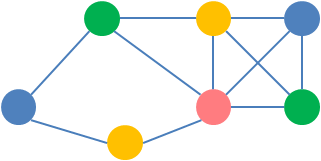 * NP-complete * Planar graphs are always colorable by four colors. * Related problem "what is the minimum number of colors?" (NP-hard) is difficult to directly map to the restricted CIMs. * Applications: register allocation ([Chaitin, 1982](http://dx.doi.org/10.1145/872726.806984)), flight level allocation ([Barnier & Brisset, 2004](http://dx.doi.org/10.1023/B:ANOR.0000032574.01332.98)), etc. --- # Related studies * Review paper ([Galinier, et al, 2013](http://dx.doi.org/10.1007/978-3-642-30504-7_20)) * Exact algorithms ([Malaguti, et al., 2011](http://dx.doi.org/10.1016/j.disopt.2010.07.005)) * Even a 125-vertex problem is intractable. * Simulated quantum annealing ([Titiloye and Crispin, 2011](http://dx.doi.org/10.1007/978-3-642-22000-5_57)) * Achieved best-known solutions up to 1000 vertices. * Independent sets ([Hao and Wu, 2012](http://dx.doi.org/10.1016/j.dam.2012.06.007)) * Good for problems of a few thousand vertices * Greedy methods ([Brelaz, 1979](http://dx.doi.org/10.1145/359094.359101); [Leighton, 1979](http://nvlpubs.nist.gov/nistpubs/jres/84/jresv84n6p489_A1b.pdf); [Hasenplaugh, et al., 2014](http://dx.doi.org/10.1145/2612669.2612697)) * Millions of vertices --- # Preliminaries * Spin representing vertex *i* is assigned color *c*: `$x_{i,c}\in\{0,1\}$` * Spin number = vertex number (*n*) x color number (*k*) * Adjacency matrix: `$A=\{a_{ij}\}$` * 1: connected, 0: not connected --- # Mapping * Hamiltonian ([Lucas, 2014](http://dx.doi.org/10.3389/fphy.2014.00005); [Rieffel, et al., 2015](http://dx.doi.org/10.1007/s11128-014-0892-x)) `$\displaystyle H = \sum_{i=1}^n \left(1-\sum_{c=1}^k x_{i,c}\right)^2 + \sum_{i<j}\sum_{c=1}^k a_{ij} x_{i,c}x_{j,c}$`. * The 1st term represents the constraint that all vertices are assigned exactly 1 color. * The 2nd term represents the constraint that if two nodes are connected, we cannot give the same color to them. * If `$H=0$` is achieved, we know the graph is *k*-colorable. --- # Expansion * The 1st term `$\begin{align}H_1 &= \sum_{i=1}^n \left(1-\sum_{c=1}^k x_{i,c}\right)^2,\\&=\sum_{i=1}^n \left(1-2\sum_{c=1}^k x_{i,c}+\sum_{c=1}^k x_{i,c}\sum_{d=1}^k x_{i,d}\right),\\&=\sum_{i=1}^n \left(1-2\sum_{c=1}^k x_{i,c}x_{i,c}+\sum_{c=1}^k \sum_{d=1}^k x_{i,c}x_{i,d}\right),\\&=\sum_{i=1}^n \left(1-\sum_{c=1}^k x_{i,c}x_{i,c}+\sum_{c\neq d} x_{i,c}x_{i,d}\right).\end{align}$` * Self-loop weights are -1, and weights between spins for the same vertex and different colors are 1. <!-- `$\displaystyle H=n-\sum_{i=1}^n\sum_{c=1}^k x_{i,c}x_{i,c}+\sum_{i=1}^n\sum_{c\neq d}x_{i,c}x_{i,d}+\sum_{i<j}\sum_{c=1}^k a_{ij} x_{i,c}x_{j,c}$`. --> --- # Example 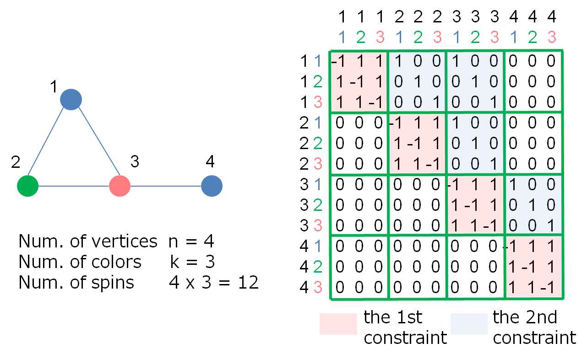 --- # Agenda * Introduction * Graph coloring problem * **Graph isomorphism problem** * Maximum clique problem * Conclusions --- # Graph isomorphism problem * Question: "Are two graphs topologically the same?" 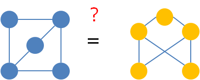 * This belongs to NP. NP-completeness is not known. * Last month, it was claimed that a **quasi-polynomial time** algorithm exists ([Babai, 2015](http://people.cs.uchicago.edu/~laci/quasipoly.html)). * Applications: verification of integrated circuit layouts, identification of chemical compounds, etc. --- # Preliminaries * Spin representing the mapping from vertex *i* of the original graph to vertex *u* of the target graph: `$x_{u,i}\in\{0,1\}$` * Number of spins: `$n^2$` * *n* is the number of vertices. * This is the worst case. In most cases, it can be reduced to `$n\log_2(n)$` ([Zick, et al., 2015](http://dx.doi.org/10.1038/srep11168)). * Original graph's adjacency matrix: `$A=\{a_{ij}\}$` * Target graph's adjacency matrix: `$B=\{b_{uv}\}$` --- # Mapping * Hamiltonian ([Zick, et al., 2015](http://dx.doi.org/10.1038/srep11168)) `$\begin{align} H =& \sum_u\left(1-\sum_i x_{u,i}\right)^2+\sum_i\left(1-\sum_u x_{u,i}\right)^2\\&+\sum_{i,j,u,v, i\neq j}(1-a_{ij})b_{uv}x_{u,i}x_{v,j}+\sum_{i,j,u,v, u\neq v}a_{ij}(1-b_{uv})x_{u,i}x_{v,j}.\end{align}$` * The 1st and 2nd terms represent the constraint that mapping is one-to-one. * The 3rd term represents the constraint that if two nodes are not connected at the original graph, they cannot be connected at the target graph as well. * The 4th term is similar. * If `$H=0$` is achieved, we know the two graphs are isomorphic. --- # Expansion * The 1st term `$\begin{align}H_1 &= \sum_u \left(1-\sum_i x_{u,i}\right)^2,\\&=\sum_u \left(1-2\sum_i x_{u,i}+\sum_i x_{u,i}\sum_j x_{u,j}\right),\\&=\sum_u \left(1-2\sum_i x_{u,i}x_{u,i}+\sum_i \sum_j x_{u,i}x_{u,j}\right),\\&=\sum_u \left(1-\sum_i x_{u,i}x_{u,i}+\sum_{i \neq j} x_{u,i}x_{u,j}\right).\end{align}$` * Self-loop weights are -1, and weights between spins for the same target vertex and different original vertices are 1. * After adding the 2nd term, self-loop weights become -2. --- # Transformation * Weight matrix * Diagonal elements: -2 * Non-diagonal elements: 0 or 1 * Symmetric * Transformation to make the weight matrix three-valued ([Zick, et al., 2015](http://dx.doi.org/10.1038/srep11168)): * Reduce diagonal elements to half. * Keep only one side of non-diagonal elements and all values on the other side are reset to 0. ---- .small[In fact, the mapping is still valid even if both sides of non-diagonal elements are retained and only the diagonal elements are halved.] --- # Example 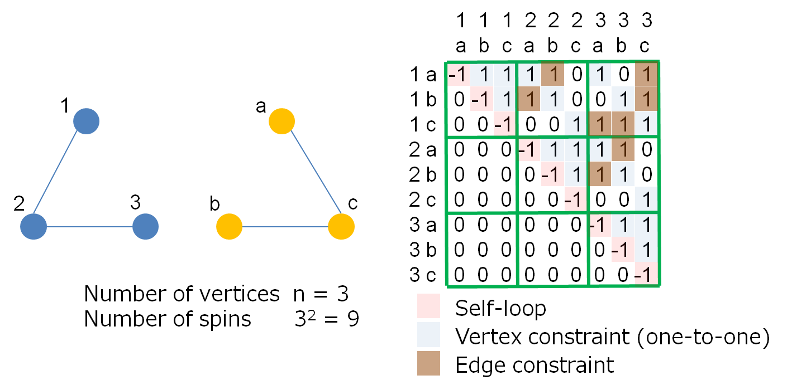 --- # Agenda * Introduction * Graph coloring problem * Graph isomorphism problem * **Maximum clique problem** * Conclusions --- # Maximum clique problem * Question: "What is the maximum subgraph in which every pair of nodes is connected?" 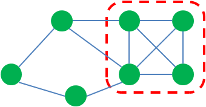 * NP-hard * Related problem "does this graph have a clique of size *k*?" (NP-complete) can be answered by solving the optimization problem. ---- .small[Precisely, a clique is a subset of nodes. Edges are not included.] --- # Applications * Determination of lower-bound for graph coloring problem * Protein structure alignment ([Strickland, et al., 2005](http://dx.doi.org/10.1287/opre.1040.0189), [Zhu and Weng, 2005](http://dx.doi.org/10.1002/prot.20331), [Malod-Dognin, et al., 2010](http://dx.doi.org/10.1007/978-3-642-13193-6_10)) ---- * Note that the notion of *clique* is usually too stringent for community detection in practice. --- # Equivalent problems * Maximum clique problem is essentially equivalent to: * **Maximum independent set (MIS)** * **Minimum vertex cover** * **Maximum set packing** * Also, **3-SAT** with *m*-clause can be mapped to MIS with *3m* vertices ([Lucas, 2014](http://dx.doi.org/10.3389/fphy.2014.00005)). <br> 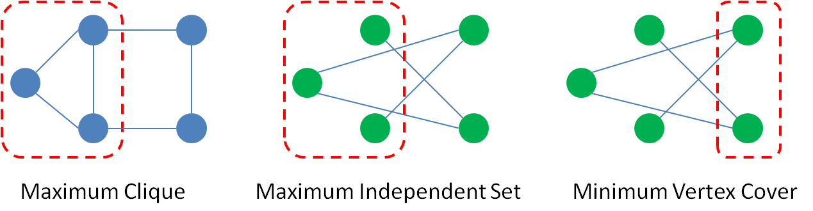 --- # Mapping * Spin representing vertex *i*: `$x_i\in\{0,1\}$` * Number of spins = Number of vertices (*n*) * Adjacency matrix: `$A=\{a_{ij}\}$` * Hamiltonian ([Lucas, 2014](http://dx.doi.org/10.3389/fphy.2014.00005)) `$\displaystyle H = \sum_{i\neq j}(1-a_{ij}) x_i x_j-\sum_i x_i.$` * The 1st term represents the constraint that we cannot select node pairs which are not connected. * The 2nd term represents the objective that we are trying to select as many nodes as possible. --- # Is the constraint always satisfied? * Hamiltonian `$\displaystyle H = \sum_{i\neq j}(1-a_{ij}) x_i x_j-\sum_i x_i.$` * Assume that a pair of spins violate the constraint. Then, if we change one of them from 1 to 0, following occurs. * The 2nd term increases by 1. * The 1st term decreases by at least 2 because of the symmetry with respect to switching *i* and *j*. * In total, the energy decreases. * Therefore, any configuration that fails to satisfy the constraint cannot be a minimum energy state. --- # Example 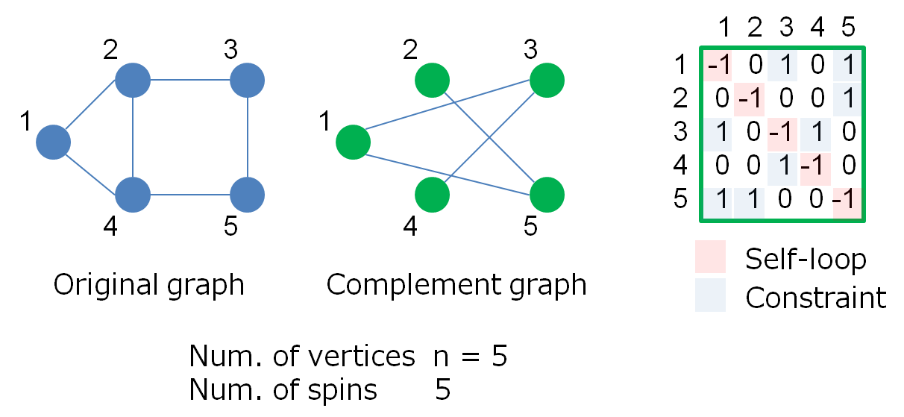 --- # Agenda * Introduction * Graph coloring problem * Graph isomorphism problem * Maximum clique problem * **Conclusions** --- # Summary Problems mappable to Ising models with three-valued weights .table-bordered[ | Problem name | Problem type | Class | Spin type | Num. of spins | |:----------------------|:-------------|:------------|:--------- |:--------------| | **Graph coloring** | decision | NP-complete |`$\{0,1\}$`| `$n \times k$`| | **Graph isomorphism** | decision | NP |`$\{0,1\}$`| `$n^2$` | | **Max. clique** | optimization | NP-hard |`$\{0,1\}$`| `$n$` | | Max. independent set | optimization | NP-hard |`$\{0,1\}$`| `$n$` | | Min. vertex cover | optimization | NP-hard |`$\{0,1\}$`| `$n$` | | Max. set packing | optimization | NP-hard |`$\{0,1\}$`|Num. of subsets| | 3-SAT | decision | NP-complete |`$\{0,1\}$`| `$3m$` | | Hamiltonian path | decision | NP-complete |`$\{0,1\}$`| `$n^2$` | | Max-cut | optimization | NP-hard |`$\{-1,1\}$`| `$n$` | ] --- # Other approaches *This page originally included some unpublished ideas, which are excluded in this version.* ---- * **Weight decomposition** method * Proposed by Prof. Kawarabayashi * Numerically tested by Mr. Haribara <!-- * Real-valued weights (*k*-bit) are decomposed into *k* components. * CIMs use one component at a time, and switch them periodically. --> --- # Future works * Prof. Yamamoto recommended to focus on **graph coloring problem** and pointed out that we need to know more about: * Status of state-of-the-art heuristic algorithms * Problem size required in real-world applications --- class: middle, center Appendix --- # Mapping from 3-SAT to MIS * 3-SAT: `$\Psi(x_1,\ldots,x_n)=C_1\wedge\ldots\wedge C_m$` * ex.) `$\Psi=(x_1\vee x_2\vee x_3)\wedge(x_1\vee \overline x_2\vee x_4)\wedge(x_2\vee x_3\vee \overline x_4)$` * Conversion 1. Convert clauses to triangles. 2. Add links between contradicting (`$x_i$` and `$\overline x_i$`) literals. 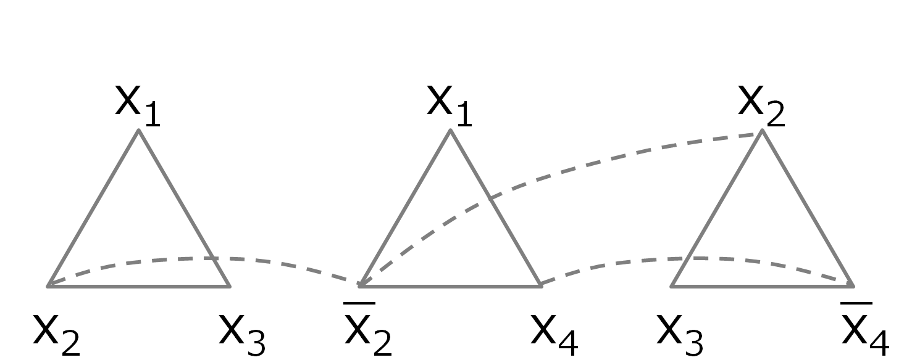 --- # 3-SAT and MIS * 3-SAT solution exists => MIS solution of size *m* exists * Keep 1 literal in each triangle and remove others. * MIS solution of size *m* exists => 3-SAT solution exists * Select all nodes whose literals appear in MIS solution at least once. Select `$x_i$` if neither `$x_i$` nor `$\overline x_i$` appears. 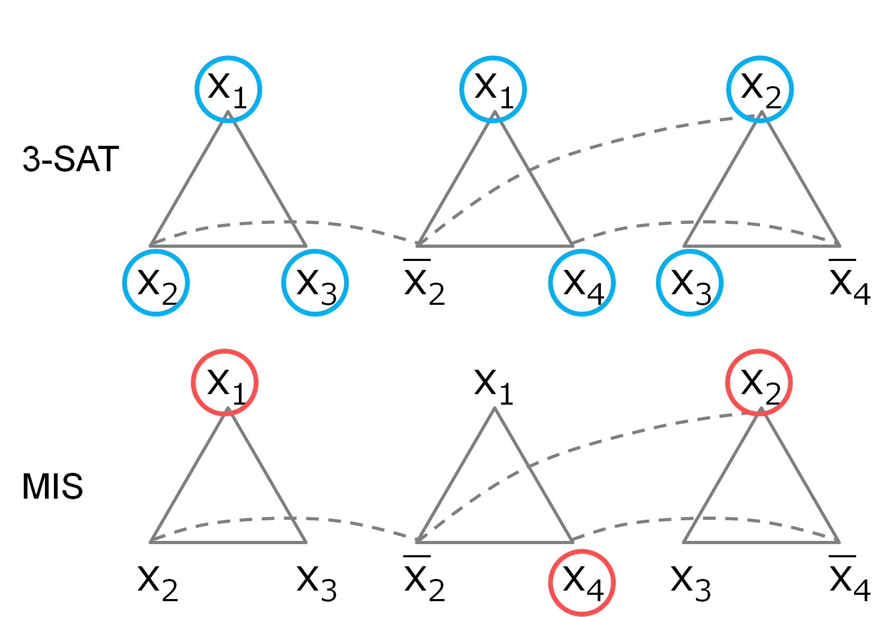 --- # Many-body interaction * If we are allowed to use real-valued coupling coefficients, **many-body interaction** can be implemented by adding auxiliary spins ([Perdomo-Ortiz, et al., 2012](http://dx.doi.org/10.1038/srep00571)). * For example, if the Hamiltonian contains a term `$x_1x_2x_3$`, where `$x_i\in\{0,1\}$`, add **a new variable `$y\in\{0,1\}$`** and replace the term with `$yx_3$`. * This is safe as long as `$y=x_1x_2$`. To achieve this, **penalty term *E* ** should be added to the Hamiltonian. `$E = c(3y+x_1x_2-2yx_1-2yx_2)$`. where `$c>0$` is a parameter. We can see that `$E=0$` for `$y=x_1x_2$` and `$E>c$` for `$y\neq x_1x_2$`. * By using this technique, 3-SAT with *n*-variables and *m*-clauses can be mapped to QUBO with *n*+*m* spins. --- # Application of Max-cut * VLSI design ([Barahona, et al., 1988](http://www.jstor.org/stable/170992)). * Crossing wires must be assigned to different layers. * By optimally assigning components to each layer, we want to minimize the number of via holes. * This problem can be mapped to Max-cut problems having both positive and negative weights. 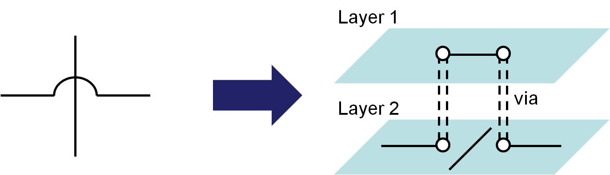 --- # In-phase and quadrature * Reference signal: `$\sin(x)$` * Phase- and amplitude-modulated signal: `$\begin{align}A\sin(x+\phi) &= A\sin(x)\cos(\phi)+A\cos(x)\sin(\phi),\\&=I\sin(x)+Q\cos(x).\end{align}$` * In-phase component: `$I\sin(x)$` * quadrature component: `$Q\cos(x)$` 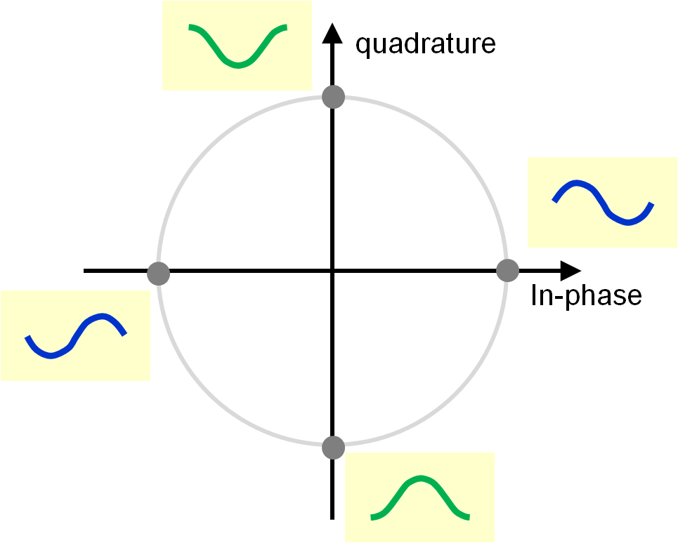 --- # Quantum annealing and AQC * **Quantum annealing** ([Kadowaki and Nishimori, 1998](http://dx.doi.org/10.1103/PhysRevE.58.5355)) `$H(t)=H_P + \Gamma(t)H_T.$` * `$H_P$`: Hamiltonian associated with the problem * `$H_T$`: Transverse field * `$\Gamma(t)$`: Amplitude of `$H_T$` that is gradually decreasing * **Adiabatic quantum computation (AQC)** ([Farhi, et al., 2001](http://dx.doi.org/10.1126/science.1057726)) `$H(t)=\left(1-\frac{t}{T}\right)H_0 + \frac{t}{T}H_P.$` * `$H_0$`: Initial Hamiltonian * `$T$`: Total running time * *Adiabatic theorem* gives the necessary length of `$T$` for certainly finding an optimal solution. --- # Simple coloring * A graph *G* having maximum degree `$\Delta$` is `$\Delta+1$`-colorable. 1. Select a vertex `$v$`. 2. Repeatedly select a vertex from the remaining that is adjacent to any vertex previously selected. 3. Assign colors to the vertices in the opposite order (lastly selected one is firstly colored). **This requires only `$\Delta$`colors** except `$v$`. * In each step, at least one neighbor is uncolored. * Thus, at most `$\Delta-1$` neighbors are colored. 4. At last, if `$v$` has unfortunately `$\Delta$` neighbors and all are differently colored, assign a new color to it. * The last point determines whether G is `$\Delta$`-colorable. --- # Brooks' theorem * A graph *G* having maximum degree `$\Delta$` is `$\Delta$`-colorable unless it is a complete graph or a cycle graph of odd length. <br> 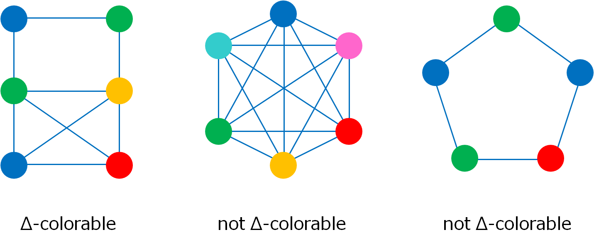 --- # Interval graph coloring * Interval graphs can be optimally colored in polynomial time. * Algorithm is simple. Just sort the intervals according to their *start* time, and assign colors to the intervals from the beginning. <br> 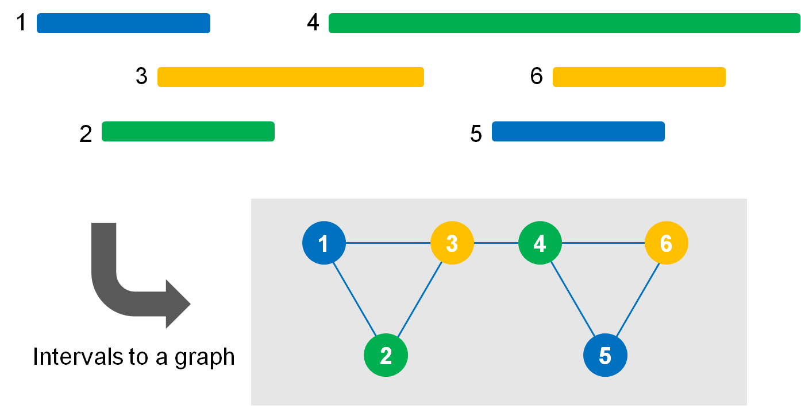 --- # MIS and related problems * Maximum independent set (MIS) * Question: "What is the maximum size of node subset among which no edge exists?" * Minimum vertex cover * Question: "What is the minimum size of node subset that contains at least one endpoint of every edge?" * Maximum set packing * `$U$`: Set of all items * `$S_i\subseteq U$`: Subsets of items * Question: "What is the maximum number of subsets in which no item is selected more than once?" --- # MIS and MVC * Maximum independent set (MIS) problem and minimum vertex cover (MVC) problem are essentially equivalent. * Intuitively, this can be seen from the following lemma: *"For any vertex cover (not necessarily minimum), its complement vertex set is independent."* * By definition, the cover set contains at least one endpoint of every edge. * Assume that an edge exists between vertices in the complement set. * If so, both of the endpoints are not in the cover set, resulting in contradiction. * Thus, the complement set is independent. --- # Related problems .table-bordered[ | type | Covering problem | Packing problem | |--------|--------------------------|-----------------------------| | set | (A) minimum set cover | (B) maximum set packing | | vertex | (C) minimum vertex cover | (D) maximum independent set | | edge | (E) minimum edge cover | (F) maximum matching | ] <br> * (A), (B), (C), and (D) are NP-hard. * (E) and (F) are polynomial-time optimization problems. * (A) is equivalent to minimum hitting set. * (B), (C), (D), and maximum clique are all equivalent. * (A) is generalization of (C) to hypergraphs. * (F) can be solved by blossom algorithm in polynomial time. * (E) can be reduced to (F) in polynomial time.